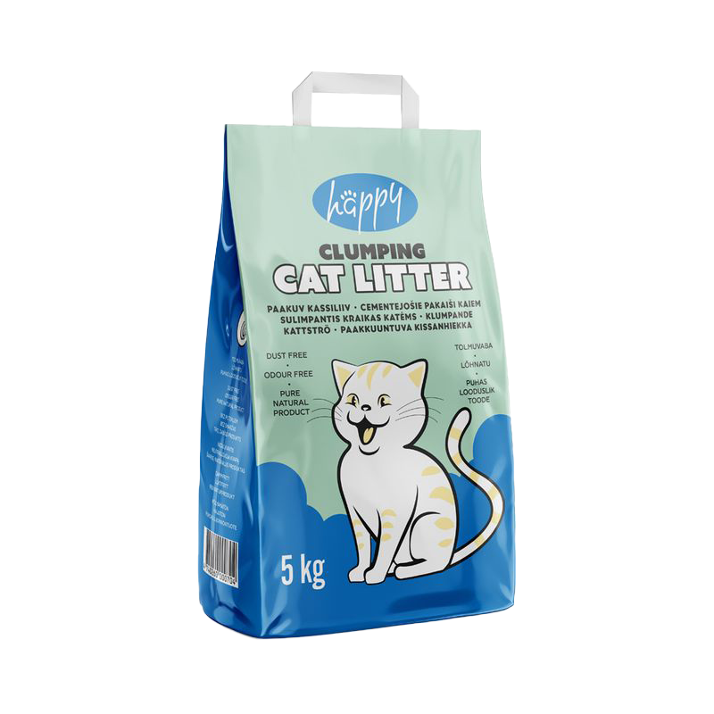
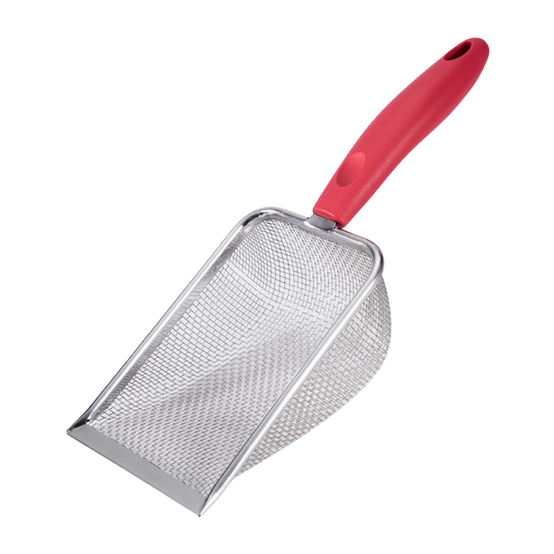
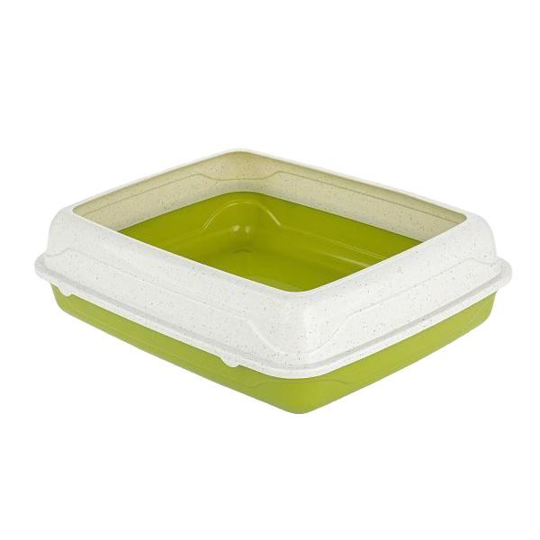
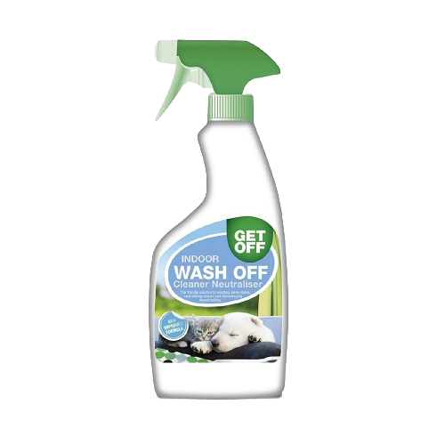

Nurrik
emane
vanus 1 aasta 1 kuu
Kui Sa ei saa kassi võtta,
siis toeta rahaliselt
Nuustik kassivarjupaiga missioon on pakkuda hüljatud, kodututele ja abivajavatele kassidele turvalist pelgupaika, hoolt ja armastust, kuni nad leiavad endale püsiva ja hooliva kodu. Töötame selle nimel, et vähendada kodutute loomade arvu, edendada vastutustundlikku loomapidamist ning tõsta teadlikkust loomade heaolust.
Nuustik on vabatahtlikest koosnev organisatsioon kasside abistamiseks. Alustasime tegevust septembris 2021 ja tegutseme Tallinnas. Nuustik on pühendunud koduta kasside päästmisele, ravimisele ja uute kodude leidmisele. Pakume kassidele ajutist peavarju, kvaliteetset hoolt ning vajalikku veterinaarabi. Iga kass saab võimaluse alustada uut elu armastavas peres.
emane
vanus 1 aasta 1 kuu

emane
vanus 10 kuud

emane, isane
vanus 1 kuu

emane
vanus 1 aasta 4 kuud

isane
vanus 3 kuud

emane
vanus 1 aasta 7 kuud
Nuustikus töötab:
1 loomaarst, tegevjuht, administraator, 2 kassi hooldajat ja 2 kassipüüdjat.
Tavaline Nuustiku päev on järgmine:
Päev algab varjupaiga avamisega. Kontrollime kasside tervist ja käitumist ning korrastame ruumid.
Seejärel saavad kassid hommikusööki, vahetame vee ning puhastame liivakastid ja puhkealad.
Päeva jooksul tegeleme kasside hoolduse ja sotsialiseerimisega: mängime, harjame ning harjutame neid inimkontaktiga.
Kaks korda nädalas käib loomaarst kõigi kasside tervist kontrollimas, jälgib nende seisundit ning vajadusel määrab ravi.
Lisaks teeme administratiivtööd, suhtleme huvilistega ning tutvustame kasse võimalikele uutele omanikele.
Õhtul saavad kassid õhtusööki, korrastame ruumid ning tagame rahuliku keskkonna puhkamiseks.
Päev lõpeb kasside seisundi ja turvalisuse kontrolli ning kokkuvõtte tegemisega.



